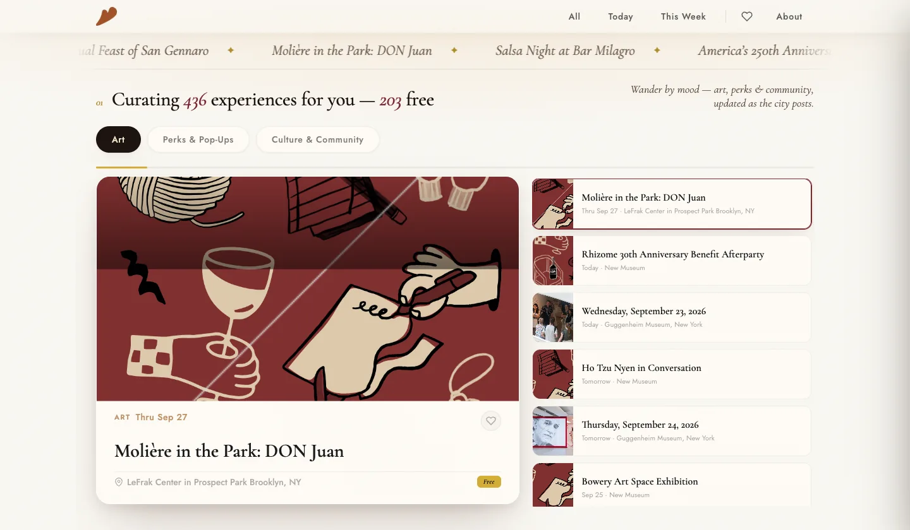

What’s actually happening
tonight.
When Soirée started, fewer than half the events it scraped carried a real date. The listings are scattered across venue calendars, community boards, and a few good newsletters. Soirée gathers them, fixes the dates, and shows you tonight.

Dates are the hard part.
Event sources are inconsistent in one specific way: many post recurring or open-ended listings with no date at all. Sorting a feed by “date” when half the dates are placeholders produces garbage.
Real dates first. Placeholders say so.
Soirée’s rule is simple and strict. Events with real dates sort first, by date. Placeholder dates render as ongoing rather than pretending to be a day. A placeholder event that stops appearing at its source is automatically marked past, so nothing needs manual cleanup and history is preserved.
Scraped from the people who post them.
One scraper per source, each tuned to it: NYC For Free, The Local Girl for Hoboken and Jersey City, Time Out New York, and the museum calendars at MoMA, the Guggenheim, and the New Museum. Each source gets its own success-rate target and its own timeout, because a slow community board and a fast museum feed shouldn’t share one.
Tonight, today, this week, free.
- Browse bytonight · today · this week · free only
- Moodsart · perks & pop-ups · culture & community · openings · shows
- Runs onNode.js · Cloudflare · scheduled scrapers
Say “ongoing” rather than guess a day.
A listing without a real date is still worth showing; it just can’t pretend to be tonight. Honest labels beat a full-looking calendar.
Built and run by Collin Stilwell, product security engineer.